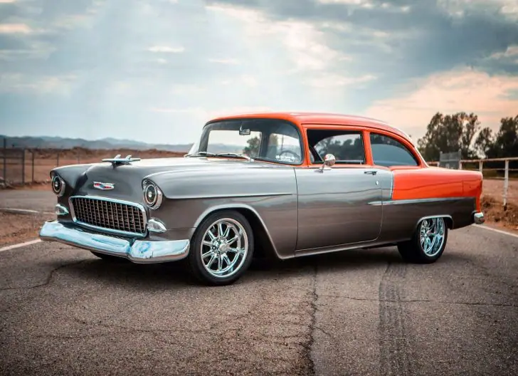
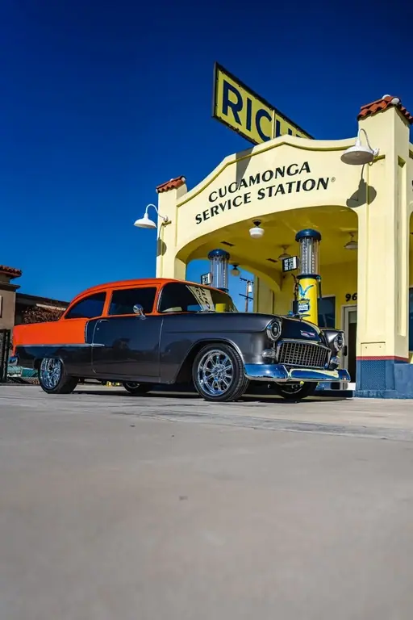
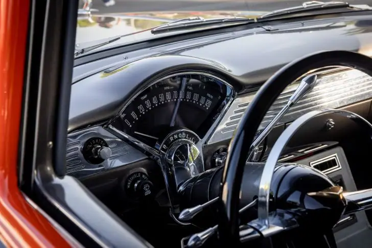
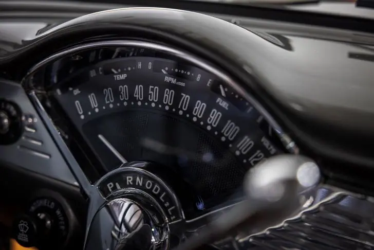
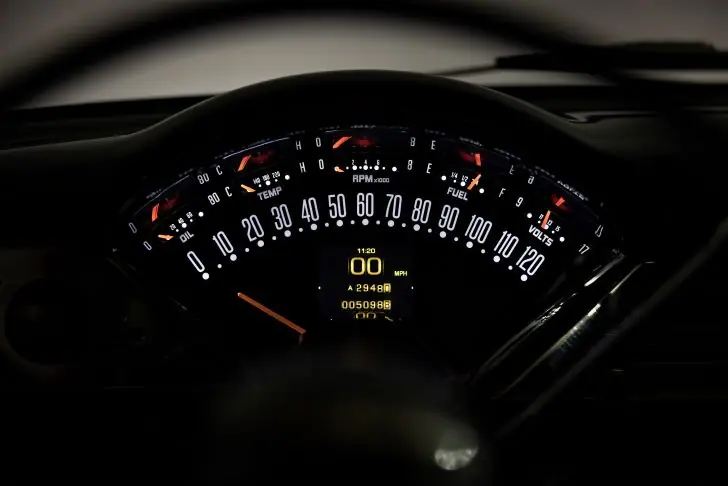
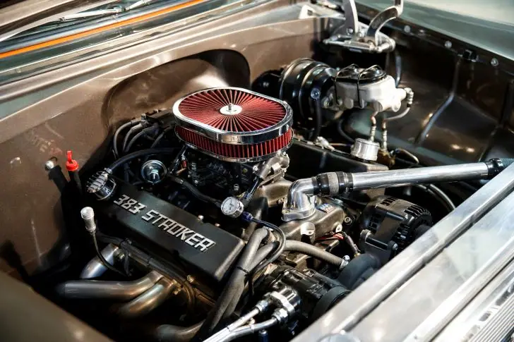
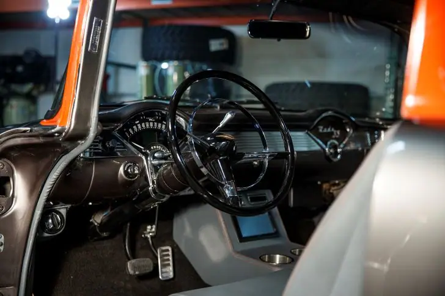
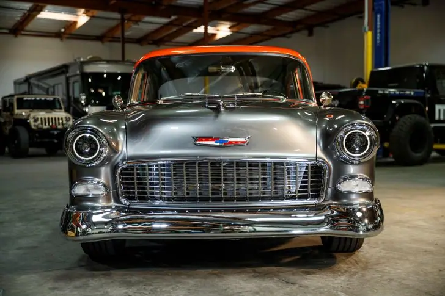

Rodney Kline 1955 Chevy
From Dakota Digital

Hard to believe there was a time a person could buy a running, driving 1955 Chevy 2 door sedan for $300. In 1967, Rodney Kline Sr. did just that in Rowland Heights, California. At the age of 16, he split the cost with his parents, forking over $150 each for the purchase of his first car. And so began Seniors love affair with hot rod Chevy’s. This car served as his daily driver and pizza delivery vehicle while growing up in southern California. Somewhere around 1978, he started to tear into the car adding a 454 ci big block Chevy engine, complete with a dual quad tunnel ram and of course, the infamous fiberglass flip nose front end! I’m sure this was inspired by the movie Two Lane Blacktop which hit the big screen in 1971.
As many of you can relate, “Life” happened, Rodney Sr. went through a variety of other Chevy’s, bring up a family, working in construction and handling handy man jobs on the side, marriage and so on. By about 1983 the 55 was getting rough but there was no chance of scrapping it. It got parked until about 2000 when Rodney Jr. was coming up in age and had an interest in hot rods.
To the enjoyment of the neighbors, the 55 was torn down. They devised an apparatus with scaffolding to lift the car off the frame and roll it out from underneath. The frame was sandblasted in the driveway, covered in POR 15 for protection and rebuilt as time went on. At some point in the process, the scaffolding decided it had had enough and let go, the body of the 55 came crashing down, wrinkling both rear quarter panels. The car traveled to numerous body shops over the course of time, only for the duo to be disappointed with shops not holding up their promise to keep working on their project.
Then, Life really happened. In 2005, Rodney Sr. was diagnosed with Stage 4 throat cancer. Working on his 55 Chevy was out of the question and the car was put on hold again. Odds of recovery were pretty slim and building hot rods was not the topic it used to be. 13 years later in 2018, Senior was recovered and ready to get back at it. The car traveled to several other body shops, an uncle in Arizona and finally landed in the hands of JV Enterprises in February 2020. The new mission for the 55 was for Junior to drive off in it after his wedding with his bride in the front seat on August 23rd of 2020. Senior did the same thing at his wedding, just happened to be a different 55, but still close enough.
In May of 2020, Senior fired up the new 383 in the 55, first time in 40 plus years he’s turned the key and had it come to life. Car was reassembled and shook down for the next few months, and Junior got the phone call on August 6th, 2020, the day before his birthday, to come pick up the 55 and prep it for his wedding.
Late summer of 2022 after many miles in the 55, Seniors cancer returned shortly before the Tri Five Nationals in Bowling Green. He passed away, but I’m sure Junior feels his dad riding in the passenger seat every time his orange and gray 55 hits the road.








Also on dakotadigital.com.